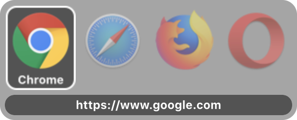
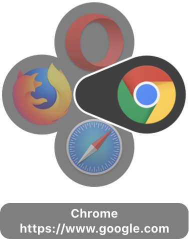
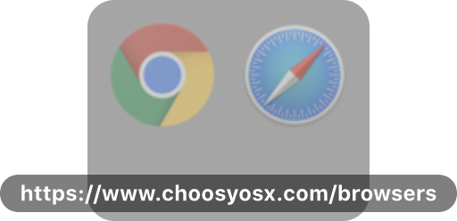

This page describes the settings on Choosy's “Appearance” tab. To find these settings launch the Choosy app (from Finder, Launchpad, etc.) and then click on the Appearance tab.
When you click on a link Choosy can be configured to prompt you to select a browser. The settings on this tab allow you to control how those prompts will look:
When Choosy prompts you to select a browser (enable this in the behaviour settings) there are two different prompt styles available.
In both prompt styles the opacity of the icon indicates whether or not the browser is running: If the icon is solid that indicates that the browser is running, if it is semi-transparent the browser is not running.
The row prompt displays the icons for the browsers in a row. The icons are displayed in the same order as your browsers list. The first icon will appear directly under the mouse pointer, so selecting your favourite browser is just a single click without moving the mouse at all. The further down your browser list a browser is, the further you have to move the mouse to click on it.
The circle prompt appears with the centre of the circle directly under the mouse pointer. The main benefit of this style is that you have to move the mouse the same distance to get to each browser. The one exception to this is the browser at the top of your browser list, the button for this browser extends into the centre of the circle so you can select this browser without moving the mouse.
There are two options for the amount of text information that can be displayed in the prompt:
If the “display the URL in the prompt” is switched on and the URL is too long to be displayed in the prompt, moving the mouse over the URL will cause it to expand and show the complete text:
The screenshots below show the two different prompt styles with all the text options switched off:
The icon size slider allows you to change the size of the icons in the prompts. The Choosy icon below the slider gives a full size preview of what the prompt icons will look like.